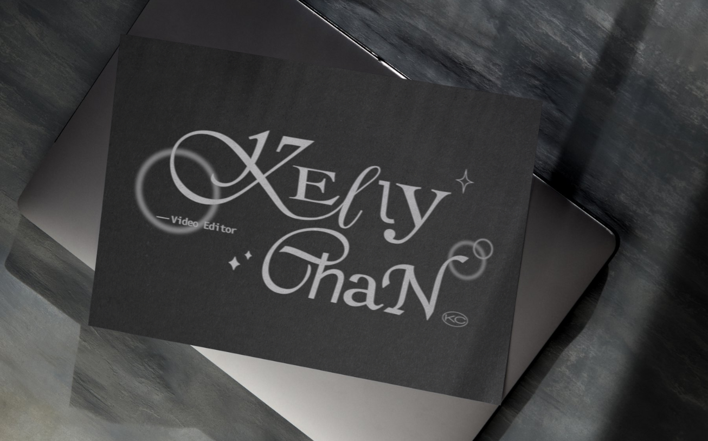
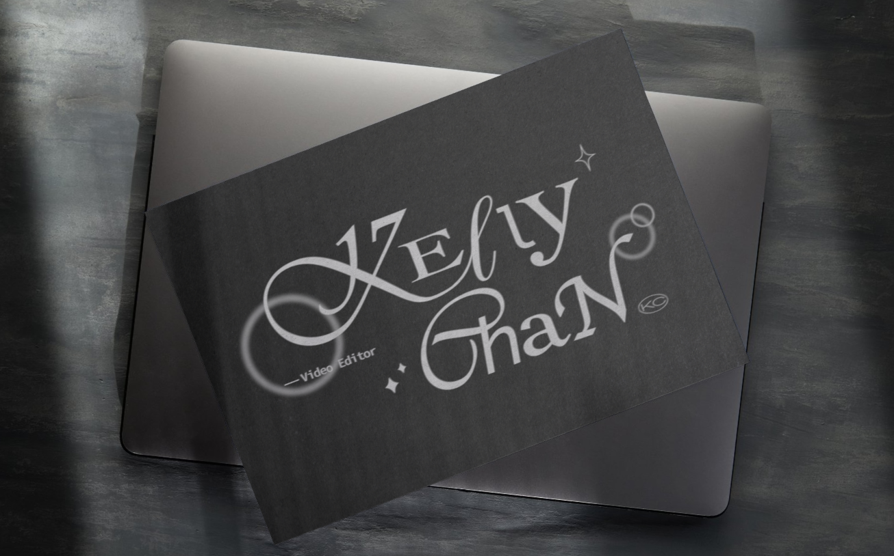
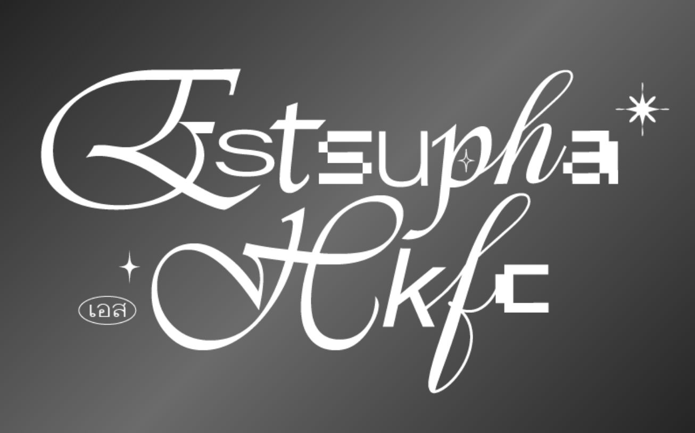
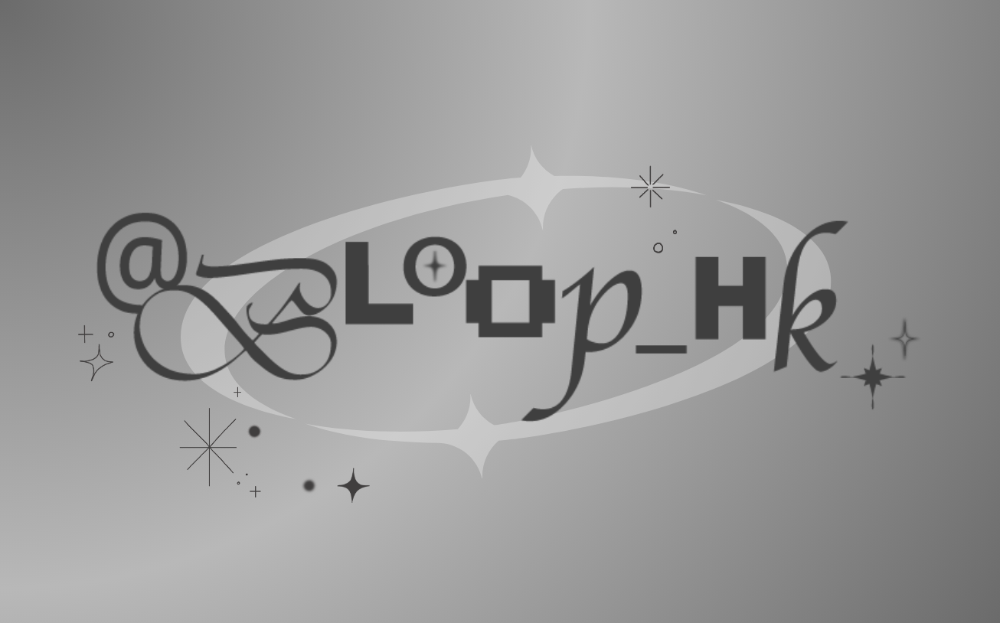

BETWEEN THE LETTERS

- Type:
- Typography
- DESCRIPTION:
-
“Between the Letters” is a typographic exploration of visual identity and expression. Inspired by early 2000s aesthetics, the project experiments with contrasting typefaces, spacing, and alignment to create dynamic compositions. Through playful arrangements and rhythm, it highlights how typography can shape tone, character, and meaning.
Project 01


Project 02


Project 03

Project 04

